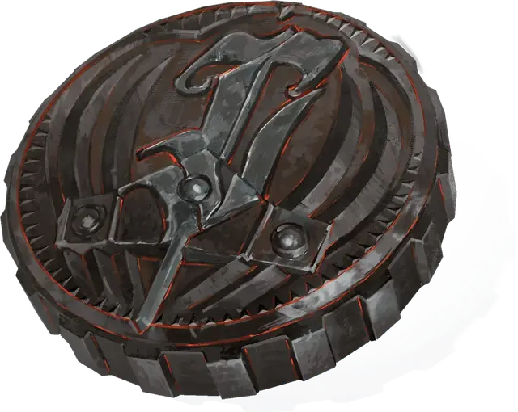

Монета души
Soul Coin
Чудесный предмет, необычный

Рекомендованная стоимость 101-500 зм
Отчеканенные из адского железа, монеты душ около 5 дюймов в ширину и около дюйма толщиной. Каждая монета весит 1/3 фунта, и на ней начертаны инфернальные письмена и заклинание, которое магически связывает одну душу с монетой. Поскольку каждая монета души имеет уникальную душу, заключенную в ней, у каждой из них есть история. Одна могла быть заключена из-за невыполнения сделки, в то время как другая могла стать жертвой проклятия ночной карги [night hag].
Владея монетами душ. Владеть монетой души — значит чувствовать, что душа находящаяся внутри неё охвачена яростью или полна отчаяния. Злое существо может нести столько монет душ, сколько пожелает (до своего максимального веса). Не злое существо может нести количество монет душ, равное или меньше, его модификатора Телосложения, без штрафа. Не злое существо, несущее количество монет душ больше, чем его модификатор Телосложения, получает помеху на броски атаки, проверки характеристик и спасброски.
Использование монеты души. Монета души имеет 3 заряда. Действием, существо, владеющее монетой, может израсходовать 1 заряд монеты души и использовать его для совершения одного из следующих действий:
- Высасывание жизни. Вы выкачиваете часть сущности души и получаете 1к10 временных хитов.
- Вопрос. Вы телепатически задаете душе вопрос и получаете краткий телепатический ответ, который можете понять. Душа знает только то, что она знала при жизни, и она обязана отвечать вам правдиво и в меру своих возможностей. Ответ не может быть больше предложения или двух, а так же может быть загадочным.
Освобождение души. Наложение заклинания, снимающего проклятие с монеты души, освобождает душу, заключенную в ней, как и расходование всех зарядов монеты. Сама монета ржавеет и разрушается, как только душа освобождается. Освобожденная душа отправляется в царство бога, которому она служила, или на внешний план, наиболее тесно связанный с её мировоззрением (по выбору Мастера). Души законно злых существ, освобожденные из монет душ, обычно выходят из Реки Стикс в виде лемуров [lemure].
Душу также можно освободить, уничтожив монету, которая её содержит. Монета души имеет 19 КД, 1 хит за каждый оставшийся заряд и иммунитет ко всему урону, кроме того, который наносится адским орудием [hellfire engine] или адскими военными машинами.
Освобождение души из монеты души считается добрым поступком, даже если душа принадлежит злому существу.
Адская валюта. Монеты душ являются валютой в Девяти Преисподних и высоко ценятся дьяволами. Монеты используются в адской иерархии для обмена на расположение, подкупа тех, кто не согласен, и вознаграждения верующих за оказанные услуги.
Монеты душ создаются Маммоном и его великими дьяволами на Минауросе, третьем слое Девяти Преисподних, в необъятной камере, где захваченные души злых смертных заключаются в монеты. Эти монеты затем распределяются по Девяти Преисподним, чтобы использоваться для покупки товаров и услуг, адских сделок, темных дел и взяток.